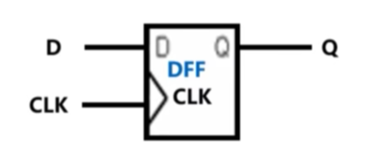
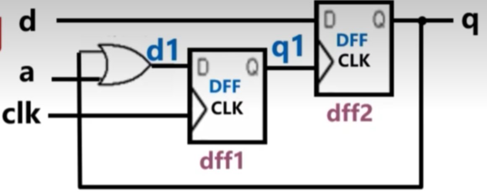
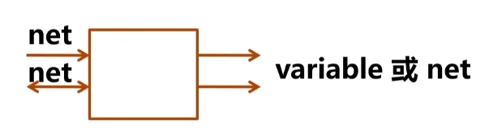
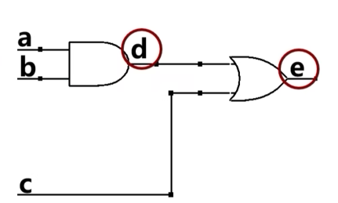
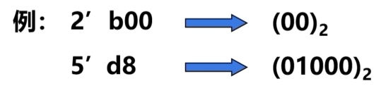
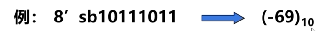
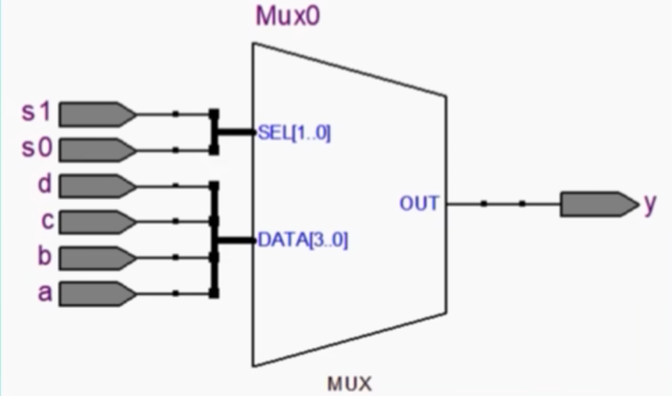
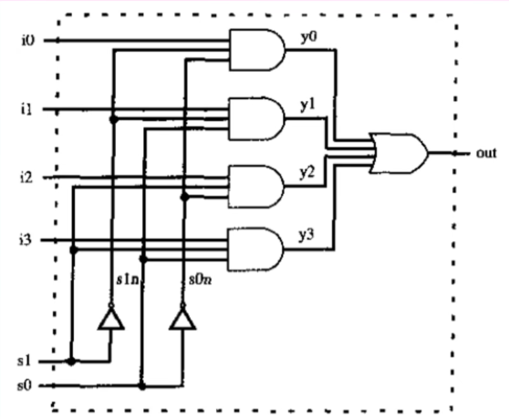
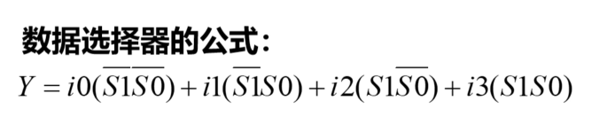

底层模块调用
底层模块描述：D触发器

1 | module DFF(CLK,D,Q); |
顶层模块描述：为了调用底层模块，需要加两个内部变量d1和q1，并给两次调用的模块命名，调用时例化名不能省略。

底层模块调用格式：底层模块名 例化名 (端口映射)
端口映射有两种方法：端口名关联法（命名法）和位置关联法（顺序法）
1、命名法格式：
(.底层端口名1(外界信号名1),.底层端口名2(外接信号名2),….)
例如：DFF dff1(.CLK(clk),.D(d1),.Q(q1));
因为有名字对应，不必按照底层模块的端口列表顺序。
2、顺序法格式：
(外接信号名1,外接信号名2,….)
例如：DFF dff2(q1,d,q)
必须严格按照底层模块的端口信号列表顺序书写。
所以上图的顶层模块可以写成：
1 | module example(clk,d,a,q); |
门原语调用
verilog语言提供已经设计好的门，称为门原语（12个）,这些门可以直接调用，不用再对其进行功能描述。
门原语调用格式：门原语名 实例名 (端口连接)
其中，实例名可省略（与模块调用不同），端口连接只能采用顺序法，输出在前，输入在后。如：and(out ,in1,in2)。端口连接中第一个是输入，其余是输入，输入个数不限
常见的门：
| and(与) | or(或) | xor(异或) | nand(非) | nor(或非) | xnor(同或) |
|---|
verilog中的数据类型
verilog中的数据类型分为两大类，线网类（net类）和变量类（variable类）。
连续赋值语句和过程赋值语句的激活特点不同，连续赋值语句不需要保存，而后者需要保存。
net型用于连续赋值的赋值目标或者门原语的输出，且仿真时不需要分配内存空间，variable用于过程赋值的赋值目标，且仿真时需要分配内存空间。
1、net类中的数据类型：
| wire（线型） | tri（三态） | tri0（下拉电阻） | supply0（地） |
|---|---|---|---|
| wand（线与） | traind（三态与） | tri1（上拉电阻） | supply1（电源） |
| wor（线或） | trior（三态或） | trireg（电容性线网） |
最常用的是wire型。
2、variable类中的数据类型：
| reg（寄存器型） | |
|---|---|
| integer（整型） | time（时间型） |
| real（实型） | realtime（实时间型） |
最常用的是reg型。
将一个信号定义成net型还是variable型由以下两点决定：
（1）使用哪种赋值语句对该信号进行赋值，连续赋值或者门原语赋值或例化语句赋值，则定义为net型。如果是过程赋值则定义为variable型。
（2）对于端口信号来说，input信号和inout信号必须定义成net型的，output信号可以是net型，也可以是variable型的，取决于如何赋值。

举个例子：
该图中d和e的赋值有3种方法。

第一种：使用连续赋值语句
1 | assign d=a&b; |
第二种：使用门原语赋值
1 | and(d,a,b); |
第三种：使用过程赋值语句
1 | always @(a,b,d,c) |
verilog中数字的表示格式
无符号数的表示方法：<位宽>‘ <进制><数字>
b表示二进制，o表示八进制，d表示十进制，h表示16进制。

有符号数的表示方法：<位宽>‘
注意：有符号数是按照补码表示的，即第一位是符号位。
-69的来源，去掉符号位，剩余位取反再+1，得到69。
逻辑值
verilog语言中的逻辑值有四种。
- 1：逻辑1，高电平，数字1
- 0：逻辑0，低电平，数字0
- x：不确定
- z：高阻态
if语句
if语句一般有四种形式。
（1）第一种
1 | if(<条件表达式>) 语句; |
（2）第二种
1 | if(<条件表达式>) 真语句;else 假语句; |
计算条件表达式，如果结果为真（1或非0值），则执行真语句；如果结果为假（0或x），则执行假语句。
（3）第三种
1 | if(<条件表达式1>) 语句1; |
（4）第四种
1 | if(<条件表达式1>) 语句1; |
举个例子：计数器
1 | always @(posedge CLK) |
在使用if语句设计组合电路时，注意如果条件不完整，会综合出寄存器。（输出无明确赋值，会沿用上一状态）
组合逻辑的核心特征：电路的输出信号，只由「当前时刻」的输入信号决定，没有任何记忆能力，输出与电路的 “过去状态” 无关。
寄存器的核心特征：具备「记忆功能」，电路的输出不仅由当前输入决定，还和「上一个时钟周期的输出状态」有关。
使条件完整的两种方法：
1、加else
1 | always @(a,b) |
2、设初值
1 | always @(a,b) |
条件表达式格式：(计算表达式)
计算表达式可以是任意形式的表达式，条件表达式的结果只有0和1两种，如果计算表达式的值为0，则条件表达书的值为0，否则为1。
case语句
case语句一般有两种格式。
第一种格式：
1 | case(表达式) |
第二种格式：
1 | case(表达式) |
功能：如果表达式的值=取值1，则执行语句1；若果表达式的值=取值2，则执行语句2；….如果表达式的值和上述取值都不相等，则执行默认语句，default语句可以不带。
例：用程序描述4选1选择器

1 | module MUX41(a,b,c,d,s0,s1,y); |
在设计组合电路时要注意条件描述完整，加default语句可以使条件完整，如果条件描述完整也可以不加default语句。
verilog语言的描述风格
verilog语言有三种描述方式，分别是：结构化描述（也称门级描述，全部用门原语和底层模块调用），数据流级描述（全部用assign语句），行为级描述（全部用always语句配合if、case语句等）。实际描述是三种混合的。
还有一些资料中提到的RTL级描述方式（数据流级+行为级，可综合）。
例：多路选择器的verilog门级描述

1 | module mux41(out,i0,i1,i2,i3,s1,s0); |
多路选择器用数据流级来描述：

1 | module mux41(out,i0,i1,i2,i3,s0,s1); |
多路选择器用行为级描述：
1 | module mux41(out,i0,i1,i2,i3,s0,s1); |
其他规定
（1）关键字
关键字及verilog语言中预定义的有特殊意义的英文词语。
（2）标识符
标识符即用户自定义的信号名模块名等，注意关键字不能作为标识符，verilog语言中区分大小写（关键字都是小写）。
（3）文件取名和存盘
verilog文件拓展名为.v，verilog语法层面不要求文件名和模块名一直，但有些软件中要求一致。
（4）注释
//表示单行注释
/* */表示多行注释